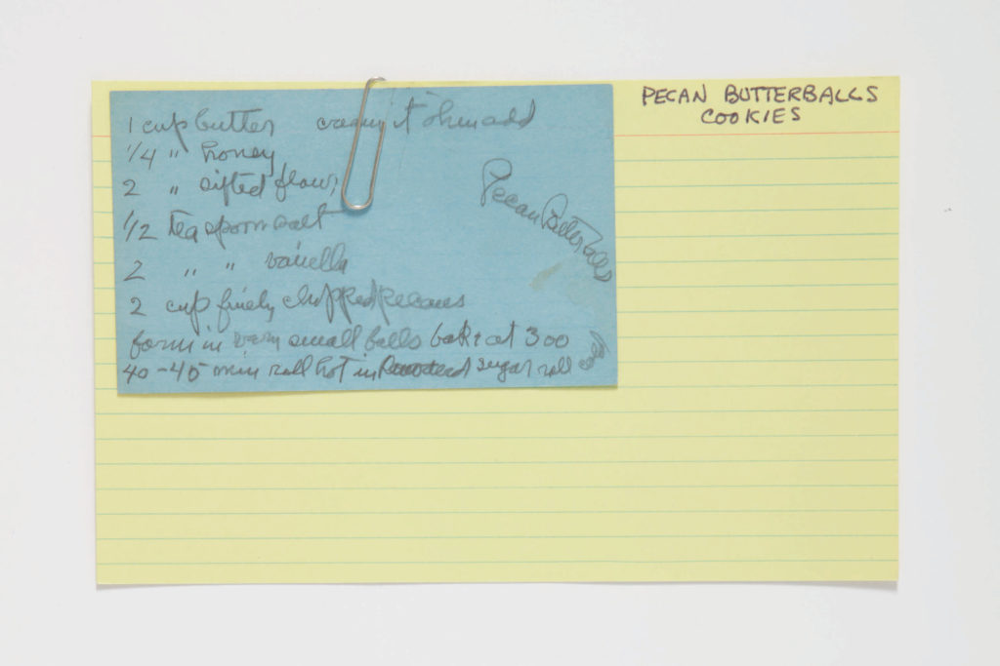
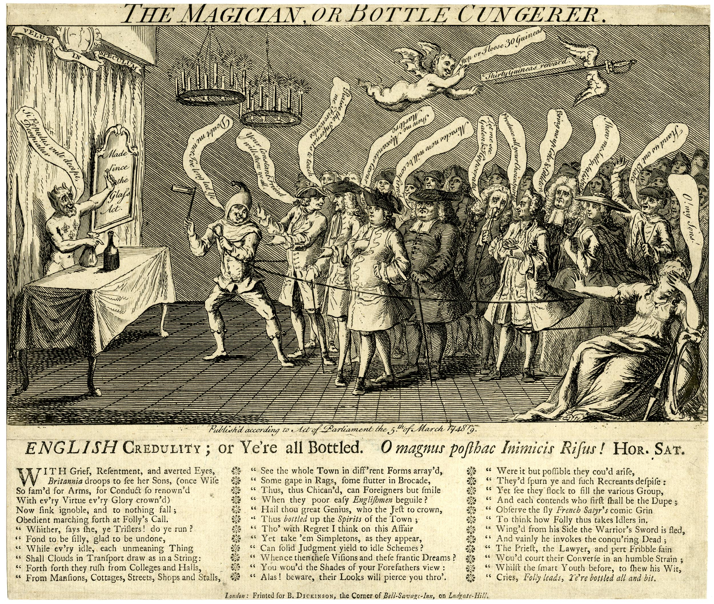

An interactive guide to language model concepts and prompting techniques.
This micro workshop introduces key concepts in Large Language Model (LLM) prompting and covers techniques for interacting with AI models, with a focus on historical research and transcription tasks.
A short, playful tour of language-model concepts that you can reuse in research workflows.
Term-Bank:
API
Batch Prompting
Model
Prompt
Role Assignment
System Message
Temperature
Top-p
Tokens
Training Data
A(n) begins with a that tells the which role to play. [Prompt] [System Message] [Model]
By lowering or , you shrink the model’s creative range. [Temperature] [Top-p]
Behind the scenes, the request travels through an to the chosen .
After slicing language from your prompt into, the AI system consults its to predict the next steps in the sequence based on mathematical vectors called . [API] [Model] [Tokens] [Training Data] [Embeddings]
Even so gym class heroes like to speed things up with . [Batch Prompting]
Scanning opens the provisioned OpenRouter chat.
OpenRouterhttps://openrouter.ai/api/v1/chat/completions-or-v1-3bc2888f4bd76427b3230f70fe5480f70385c2202452ac3a5a8c68c1fbc94e3f
openai/gpt-4o: Flagship large language model from OpenAIanthropic/claude-3-sonnet: Flagship large language model from Anthropicgoogle/gemini-pro-vision: Vision language model for extracting images + text together from Googlemistralai/pixtral-large-2411: Vision language model built on top of mistral-large-2411 from MistralAImistralai/pixtral-12b: Fast, lightweight vision language model for documenting understanding from Mistral AIComplete the incomplete paragraph in the following excerpt from a primary source:
[insert-excerpt]openai/gpt-4oanthropic/claude-3-sonnetgoogle/gemini-pro-visionmistralai/pixtral-12bYou are an advanced OCR processing tool for parsing and transcribing historical materials with mixed media, multiple formats, and/or challenging handwriting.Transcribe the attached image of the document with alt-text for mixed media or embedded images, filling as Dublin Core fields where present and grounded in the input file, which the user will provide.Testing examples made from Chatbox HTML exports to see how different vision models stack up against actual sources.
This example shows how various models transcribe and analyze a handwritten recipe card ("Pecan Butterballs Cookies"). Observe differences in transcription accuracy, alt text generation, and Dublin Core field extraction, especially with challenging handwriting.
View Recipe Comparison This example features an 18th-century engraving ("The Magician, or Bottle Cungerer") with dense text and complex imagery. Compare how models handle historical language, layout complexity, and the extraction of metadata from printed sources.
View Magician Comparison As you review these examples, consider the following points:
Reflecting on these differences can help you choose the best model for specific tasks and understand the strengths and weaknesses of current vision-language technology.